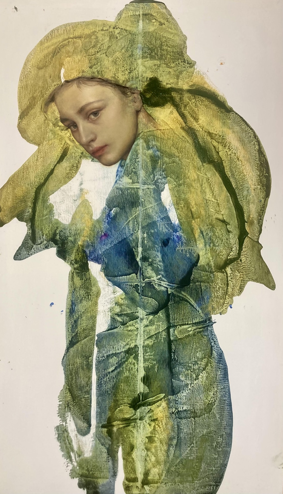

Teresa Moreno
Spanish visual artist · Toledo

Painting as discovery and connection.
Teresa Moreno is a Spanish visual artist born in Toledo. Largely self-taught, she has developed a distinctive artistic language shaped by experimentation, intuition and a profound bond with nature.
Her work moves between figuration, realism and abstraction. Her most personal research centres on folding: an experimental process in which pigment, paper and pressure produce singular forms and structures, opening a dialogue between control and intuition.
For over two decades, she has combined her artistic practice with teaching painting. Since 2023, she has been part of the artistic collective Mancharte.
La pintura como descubrimiento y conexión.
Teresa Moreno es una artista plástica española nacida en Toledo. De formación principalmente autodidacta, ha desarrollado un lenguaje propio marcado por la experimentación, la intuición y una profunda conexión con la naturaleza.
Su obra transita entre figuración, realismo y abstracción. Su investigación más personal se centra en el pliegue: un proceso experimental en el que pigmento, papel y presión generan formas y estructuras singulares, en diálogo entre control e intuición.
Durante más de dos décadas ha compaginado su actividad artística con la enseñanza de la pintura. Desde 2023 forma parte de la agrupación artística Mancharte.
selected works
12 works · click to enlargeinquire
For availability and further information about Teresa Moreno's work, please contact the gallery.
Contact Senso →